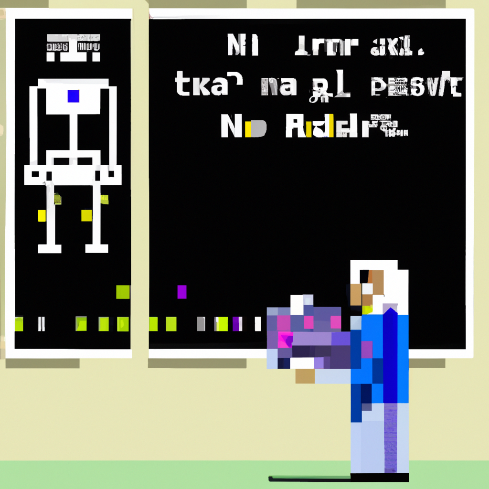

Why AI will never replace the radiologist
One of the biggest debates in the medical world is the idea of AI replacing the radiologist. The idea of AI taking over for radiologists has been around for some time and many people think that it will eventually replace them. However, this is not the case. Artificial intelligence is a powerful tool, but it can never replace the skill and knowledge of a radiologist.
AI has many advantages over human radiologists in terms of speed, accuracy, and cost. AI can quickly and accurately detect abnormalities in medical images and can even suggest possible diagnoses. But, AI can never replace the human factor. A radiologist’s interpretation of a medical image is based on experience, intuition, and knowledge of the patient’s history. AI, on the other hand, can only process and analyze the data it is given.
Another factor to consider is the ethical implications of using AI in medical imaging. AI algorithms are only as good as the data they are trained on. If the data is biased or incomplete, then the algorithm can make mistakes that can lead to incorrect diagnoses. This could have serious consequences for patients.
Overall, AI can be a powerful tool to help radiologists do their job more efficiently and accurately. However, it can never replace the human factor that comes with a radiologist’s interpretation of a medical image. AI is a powerful tool, but it is important to remember that it is still just a tool and should never be used to replace a radiologist’s judgment.